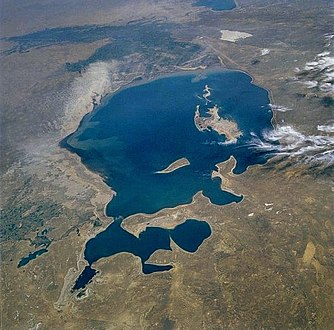

Reclaiming the future of aral sea
A The Aral Sea gets almost all its water from the Amu and Syr rivers. Over millennium the Amu’s course has drifted away from the sea, causing it to shrink. But the lake always rebounded as the Amu shifted back again. Today heavy irrigation for crops such as cotton and rice siphons off much of the two rivers, severely cutting flow into their deltas and thus into the sea. Evaporation vastly outpaces any rainfall, snowmelt or groundwater supply, reducing water volume and raising salinity. The Soviet Union hid the sea’s demise for decades until 1985, when leader Mikhail Gorbachev revealed the great environmental and human tragedy. By the late 1980s the sea’s level had dropped so much that the water had separated into two distinct bodies: the Small Aral (north) and the Large Aral (south). By 2007 the south had split into a deep western basin, a shallow eastern basin and a small, isolated gulf. The Large Aral’s volume had dropped from 708 to only 75 cubic kilometers (km3), and salinity had risen from 14 to more than 100 grams per liter (g/1). The 1991 dissolution of the Soviet Union divided the lake between newly formed Kazakhstan and Uzbekistan, ending a grand Soviet plan to channel in water from distant Siberian rivers and establishing competition for the dwindling resource.
B Desiccation of the Aral Sea has wrought severe consequences. Greatly reduced river flows ended the spring floods that sustained wetlands with freshwater and enriched sediment. Fish species in the lakes dropped from 32 to 6 because of rising salinity and loss of spawning and feeding grounds (most survived in the river deltas). Commercial fisheries, which caught 40,000 metric tons of fish in 1960, were gone by the mid-1980s; more than 60,000 related jobs were lost. The most common
remaining lake occupant was the Black Sea flounder, a saltwater fish introduced in the 1970s, but by 2003 it had disappeared from the southern lakes because salinity was more than 70 g/1, double that of a typical ocean. Shipping on the Aral also ceased because the water receded many kilometers from the major ports of Aralsk to the north and Moynak in the south; keeping increasingly long channels open to the cities became too costly. Groundwater levels dropped with falling lake levels, intensifying desertification.
C The receding sea has exposed and dried 54,000 square kilometers of seabed, which is choked with salt and in some places laced with pesticides and other agricultural chemicals deposited by runoff from area farming. Strong windstorms blow salt, dust and contaminants as far as 500 km. Winds from the north and northeast drive the most severe storms, seriously impacting the Amu delta to the south—the most densely settled and most economically and ecologically important area in the region. Afrbome sodium bicarbonate, sodium chloride and sodium sulfate kill or retard the growth of natural vegetation and crops—a cruel irony given that irrigating those crops starves the sea. Health experts say the local population suffers from high levels of respiratory illnesses, throat and esophageal cancer, and digestive disorders caused by breathing and ingesting salt-laden air and water. Liver and kidney ailments, as well as eye problems, are common. The loss of fish has also greatly reduced dietary variety, worsening malnutrition and anemia, particularly in pregnant women.
D Returning the entire Aral Sea to its 1960s state is unrealistic. The annual inflow from the Syr and Amu rivers would have to be quadrupled from the recent average of 13 km3. The only means would be to curtail irrigation, which accounts for 92 percent of water withdrawals. Yet four of the five former Soviet republics in the Aral Sea basin (Kazakhstan is the exception) intend to expand irrigation, mainly to feed growing populations. Switching to less water- intensive crops, such as replacing cotton with winter wheat, could help, but the two primary irrigating nations, Uzbekistan and Turkmenistan, intend to keep cotton to earn foreign currency. The extensive irrigation canals could be greatly improved; many are simply cuts through sand, and they allow enormous quantities of water to seep away. Modernizing the entire system could save 12 km3 a year but would cost at least $16 billion. The basin states do not have the money or the political will. Kazakhstan has nonetheless tried to partially restore the northern Aral.
E We expect salinities in the Small Aral to settle at three to 14 g/1, depending on location. At these levels many more indigenous species should return, although the saltwater kambala would disappear from most places. Further restoration is possible. For example, if irrigation improvements raised the average annual inflow from the Syr to 4.5 km3, which is entirely feasible, the lake’s level could stabilize at about 47 meters. This change would bring the shoreline to within eight kilometers of Aralsk, the former major port city, close enough to allow recovery of an earlier channel that connected the city to the receding waters. The channel would give large commercial fishing vessels access to the sea, and shipping could restart. Marshlands and fish populations would improve even more because of a further reduction in salinity. Outflow to the southern lakes could also increase, helping then restoration. Such a plan would require a much longer and higher dike, as well as reconstruction of the gate facility, and it is not clear that Kazakhstan has the means or desire to pursue it. The country is, however, now discussing more modest proposals to bring water closer to Aralsk.
F The Large Aral faces a difficult future; it continues to shrink rapidly. Only a long, narrow channel connects the shallow eastern basin and the deeper western basin, and this could close altogether. If countries along the Amu make no changes, we estimate that at current rates of groundwater in and evaporation out, an isolated eastern basin would stabilize at an area of 4,300 square kilometers (km2). But it would average only 2.5 meters deep. Salinity would exceed 100 g/1, possibly reaching 200 g/1; the only creatures that could live in it would be brine shrimp and bacteria. The western basin’s fate depends on ground- water inflow, estimates for which are uncertain. Someone has noted numerous fresh- water springs on the western cliffs. The most reliable calculations indicate that the basin would settle at about 2,100 km2. The lake would still be relatively deep, reaching 37 meters in spots, but salinity would rise well above 100 g/1.
Questions 1-6
The reading Passage has seven paragraphs A-F.
Which paragraph contains the following information? Write the correct letter A-F, in boxes 1-6 on your answer sheet.
NB You may use any letter more than once.
1 A mission impossible
2 An extremely worrying trend for one main part of Aral Sea
3 An uncompleted project because of political reasons
4 A promising recovery in the future
5 A strongly affected populated district
6 The disclosure of a big secret
Questions 7-9
Do the following statements agree with the information given in Reading Passage? In boxes 7-9 on your answer sheet, write
TRUE if the statement is true
FALSE if the statement is false
NOT GIVEN if the information is not given in the passage
7 In response to the increasingly growing number in the population, not all nations near the Aral Sea consider plans which will enhance the severity of the problems the Aral Sea is faced with.
8 The willingness for Kazakhstan to take the restoration action to save the Small Aral Sea is somehow not certain.
9 The western basin seems to have a destined future regardless of the influx of the groundwater.
Questions 10-13
Complete the following summary of the paragraphs of Reading Passage, using No More than Three words from the Reading Passage for each answer. Write your answers in boxes 10-13 on your answer sheet.
The 10 produced by the floodwaters, which were ceased because of the decrease in 11 of the Aral Sea, are main sources to keep the survival of the wetlands. The types of fishes living in it experienced a devastating tragedy out of the increase in 12 and decrease in spots for 13 with a good example of the extinction of a specific fish. What is more, fisheries and shipping suffered greatly from these vast changes.
---End of the Test---
Please Submit to view your score, solution and explanations.